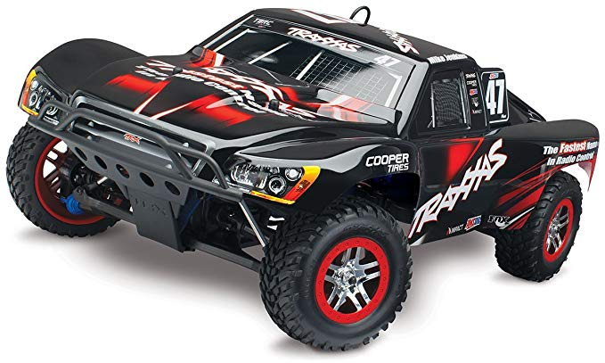
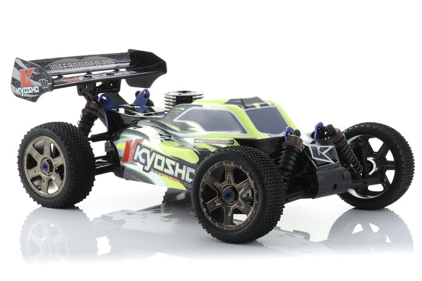
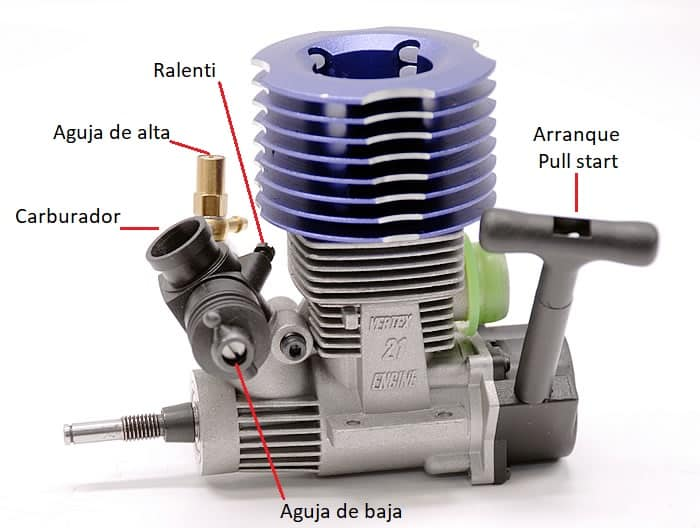
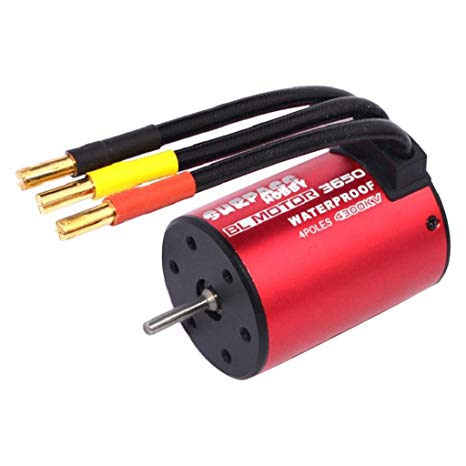

Aqui os enseñaremos todo lo necesario para poder inicializarse en el mundo del coches RC
Los coches RC son vehiculos controlados por una emisora, normalmente de 2,4Ghz de frecuencia
Hay muchos tipos de coches teedirigidos tanto electricos como de combustion, la gran diferencia es
sin duda el precia, ya que un coche teledirigido de combustión es mucho mas caro que uno electrico

Aqui podemos observar un coche RC electrico.

Y aquí a diferencia del otro este es un coche a combustión
Cual es mejor de los dos
Esta es una pregunta que se plantea mucha gente debido a la velocidad,rendimiento eficiencia, etc...
Los coches a gasolina o de dos tiempos son coches en los que hay que tener cuidado con las tempera-
turas debido a que son motores en los que su funcionamiento es un piston que comprime oxigeno, aceite y
gasolina, y asi conseguir una explosion para mover un diminuto arbol de levas que lleva la fuerza del
movimiento hasta los ejes de las ruedas.

Gracias a estos motores podemos conseguir altas velocidades y
y autonomia pero hoy en dia los motores eléctricos están consiguiendo y superando en muchos casos a los
motores de combustion debido a el incremento de tecnología de las baterías y los motores brushless.

En conclusión, cual compramos
Hemos visto los dos tipos de coches teledirigidos (RC) que existen hoy en dia y en general hemos
podido comparar y testear cada uno de ellos y los dos van a una velocidad mas o menos similar por
de lo que realmente depende es de lo que se quiera gastar cada uno y esté buscando ya que tampoco
tiene el mismo mantenimiento un coche con motor electrico que un coche con motor de combustion,
teniendo que agustarlo y hacerle mediciones y comprobaciones para que nos se caliente, etc y en
cambio en un motor electrico de lo unico que te tienes que preocupar es de que no es ensucien los
engranages y de que lleves en el bolsillo siempre mas de una batería para poder disfrtar más
tiempo debido a que los coches eléctricos suelen durar entre 15 y 20 minutos dependiendo del tiempo
que estes acelerando y de las irregularidades del terreno,etc.
En conclusion si es tu primer coche teledirigido o todavia eres un novato te recomiendo que te compres
un cocehe electrico ya que vas a poder tener un poco menos de cuidado tanto a la hora de mantenimiento
como a la hora de que se de un golpe,etc; pero si encambio eres una persona que ya tiene experiencia
en el mundillo de los coches teledirigido y no os importa gastaros un poco mas, podeis obtar por
por los cocher teledirigidos a combustion, ya que si tienes experiencia en el mundillo sabras como
poder ajustarlo y hacerle el mantenimiento requerido al motor de combustión.